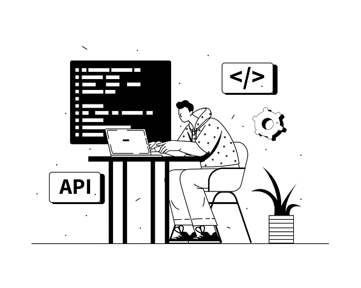

Detect spacing, indentation, and unused code issues to maintain clean and readable code.
Catch logic issues and unsafe patterns early to improve code quality.
Spot security risks early, like unsafe access and weak encryption, to write safer code from the star

Analyze function complexity and simplify code for better reliability.
Ensure your custom modules follow Odoo’s official coding standards, from proper naming to a clean structure. Build confidently with fully compliant code.
To install the Odoo Module Health Report, follow these
standard Odoo module steps:
Place the module folder inside your Odoo custom_addons/ directory.
Install the required Python dependencies using the provided requirements.txt file: pip install -r requirements.txt
In Odoo, go to Apps > Update App List to refresh available modules.
Search for Odoo Module Health Report in the Apps menu and click Install
Identify code issues early, follow best practices, and deliver cleaner, more maintainable modules.
Save time with automated insights into code quality, structure, and violations during reviews
Ensure consistency across the team’s codebase and reduce long-term maintenance overhead
Validate module quality before deployment, catch risks early, and maintain stable environments.
Gain confidence that installed modules meet quality standards and follow proper development practices, reducing issues and improving reliability.